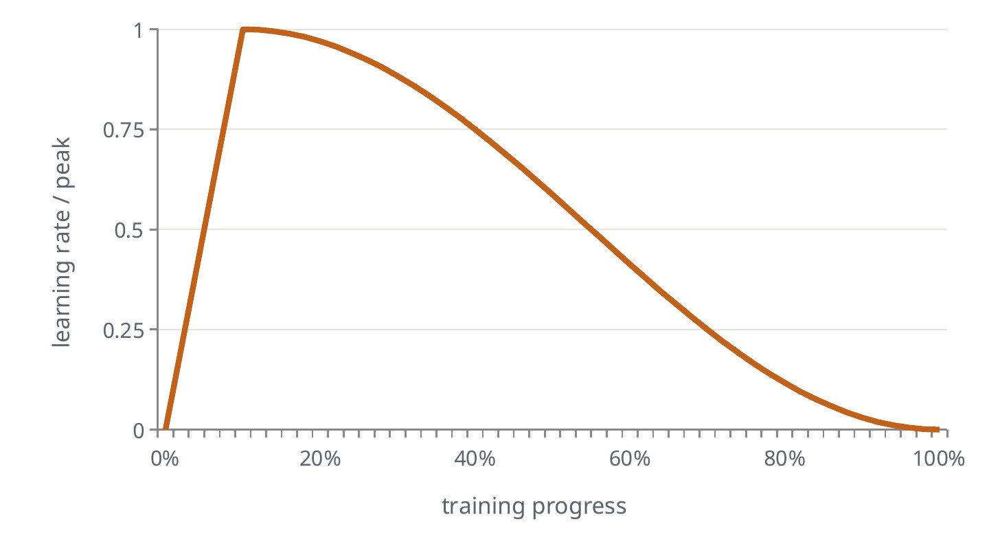
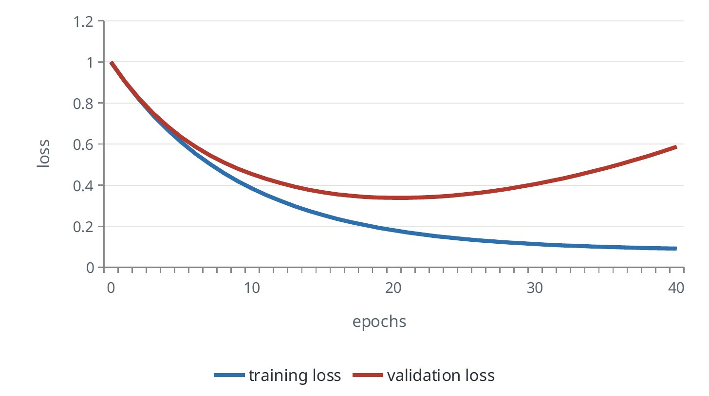

The training loop
Every model in this guide, from a small classifier to a robot foundation model, is trained the same way: four steps, repeated millions of times.

The forward pass turns a batch of inputs into predictions. The loss scores how wrong those predictions are, as a single number. The backward pass, called backpropagation, applies the chain rule layer by layer to find how much each weight contributed to the loss. That is the gradient. The update nudges every weight a small step against its gradient.
The optimizer decides the size of that step. AdamW is the default today. It keeps a running average of each weight’s gradient and of its size, which gives every weight its own step size, and it applies weight decay, a gentle pull toward zero, as a separate step.
Learning rate: warm up, then decay
The learning rate is the size of each update, and it is the most important number you will tune.


Training starts near zero and ramps up, because early gradients are noisy and large steps can wreck a model before it has found its footing. The rate then decays smoothly so the model can settle. If the loss jumps or becomes NaN, the rate is too high. If the loss falls very slowly, it is too low.
One trap is worth knowing early. A metric that stops improving only because the schedule has reached zero has not converged. Check that the model levelled off while the learning rate was still meaningfully above zero.
Loss functions: telling the model what “wrong” means
The loss is the only signal the model gets, so choosing it is choosing what the model cares about. Pick the one that matches the kind of output.
| Loss | Use it when the output is | Intuition | Where you will see it |
|---|---|---|---|
| Cross entropy | One of several classes, or the next token | Penalises low probability on the correct answer | Classifiers, language models, action tokens |
| MSE | A continuous number | Penalises large errors heavily; predicts the average | Regression, diffusion and flow-matching targets |
| L1 or Huber | A continuous number with outliers | Penalises errors evenly | Action regression, depth, boxes |
| KL divergence | A probability distribution | How different two distributions are | VAEs, distillation from a teacher |
| Contrastive | An embedding | Pull matching pairs together, push the rest apart | CLIP-style models, retrieval |
The second row matters for robots. MSE predicts the mean, so a policy trained with it averages two valid ways of doing a task. The note on robot policies shows why that fails.
Why these losses: maximum likelihood
The losses in the table above are not arbitrary. Each one says: make the training data as probable as possible under the model. Cross entropy is exactly that for a choice among classes. Mean squared error is the same idea under the assumption that the right answer is one value blurred by bell-shaped noise.
That assumption is why squared error predicts the average. If the data contains two different right answers, a single bell curve fitted to both sits in the middle. Generative models exist to replace that assumption with something that can hold several answers at once.
Overfitting and capacity


The goal is low error on data the model has never seen. Capacity is how complex a function the model can represent, roughly its number of parameters. A model that is too small, or a broken training run, gives high loss on both training and validation data. That is underfitting. A model that memorises shows training loss still falling while validation loss rises. That is overfitting.
The modern twist is that very large models trained on very large datasets often keep generalising past the point where the classic picture says they should fail, an effect called double descent. The practical rule has not changed: hold out data, plot both curves, and reach for more data before anything else.
Convolutions: the older building block that stayed
Before transformers, vision models were built from convolutions. A convolution slides a small grid of weights over the image and, at each position, outputs one number saying how well the patch underneath matches the grid.

Two properties made this work. The same weights are used at every position, so a feature learned in one corner is recognised in another. And each output looks only at a small neighbourhood, so early layers find edges and later layers combine them into parts and objects.
Transformers have replaced convolutions as the main architecture, and convolutions are still in most systems. The step that cuts an image into patch tokens is a convolution. The autoencoders that compress images and video are convolutional. Several robot policies still use a convolutional network for vision.
The stabilisers
Three small ideas make deep networks trainable and keep them from memorising.
- Regularisation. Weight decay pulls weights toward zero. Dropout randomly silences units during training. Augmentation, such as random crops and colour shifts, acts as free extra data and matters a great deal when robot data is scarce. Early stopping keeps the checkpoint with the best validation score.
- Normalisation. It keeps the numbers flowing through the network at a steady scale. Transformers use LayerNorm or RMSNorm; older convolutional networks use BatchNorm.
- Residual connections. Each layer adds a correction to its input, so the output is x + f(x). Gradients get a direct path back to the early layers, which is what allows networks hundreds of layers deep.
Common mistakes
- Tuning everything except the learning rate. If training diverges or stalls, look there first.
- Stopping at the step budget. A run is finished when the validation curve has flattened, not when the counter runs out.
- Reading the training loss alone. It always improves. Only the validation curve says whether the model is learning or memorising.
Terms
- Gradient
- How the loss changes as each weight changes.
- Batch
- The handful of samples used for one update.
- Epoch
- One full pass over the training data.
- Weight decay
- A small pull of every weight toward zero at each step.
- Convolution
- A small grid of weights applied at every position of an image.